Week 1 Email
Hello folks,
It was great to “see” you all in our first live session today. As we showed on the call, we have folks from all over, which is great to see!

Week 1 Live Session Follow-Up
As promised, the recording of our live session is now available. You can find a link to the slides on that lesson (also here).
We talked a lot about logistics this session. The quick recap is that R in 3 Months is many things. The most important pieces are:
Live weekly sessions are Wednesdays 10-11 Pacific time
Course assignments done every week. You can see the lessons you are to do that week on the R in 3 Months Spring 2023 course page.
Project assignments where you work on applying what you learn in the course materials to your own work. You’ll find a project assignment lesson each week that lays out what you are to do.
Feedback from Charlie will come on your project assignment submissions. You will receive an email with a link to the feedback.
Drop-in sessions (aka office hours) with Charlie happen Tuesdays 12-1 Pacific time. These are unstructured and provide a chance for you to join and ask any questions you may have.
Ideas for Project
For the project assignments, you’ll need data to work with. As we discussed today, you’ll want to avoid data with confidential information. If you need help removing personally identifiable information from your data for R in 3 Months, please email me and Charlie.
For people who don’t have data they want to work with, we recommend looking to external sources:
If you need help figuring out what data to use, please let us know.
Questions
R in 3 Months is more than just access to course materials. One of the major benefits is access to myself and Charlie over the course of the 3 months. If you have questions, we are here to answer them.
If your questions are about specific lessons, please ask them under the lesson. If you have a more general question, please email me and Charlie. It’s quite likely others have the same question. If this is the case, we will make additional lessons (you can find these at the bottom of the course page). Here are some additional lessons we made for the last cohort.
Next Week: RMarkdown
For next week, you’ll be learning about RMarkdown. It’s a unique way of working that will allow you to do everything you do in multiple tools in a single tool. For background, you might find the chapter on RMarkdown in my upcoming book, R Without Statistics, interesting.
Your course assignment is to complete the lessons on RMarkdown.
Your project assignment is to write an introduction to a report using RMarkdown. To be honest, the content doesn’t really matter here. We just want you to get used to the idea of working with RMarkdown. You’ll submit your project assignment as a gist on GitHub. I know this may sound unfamiliar, but we have a video that walks through exactly what you need to do on the week 2 project assignment lesson page.
If you have any questions, please don’t hesitate to let us know.
Cheers,
David